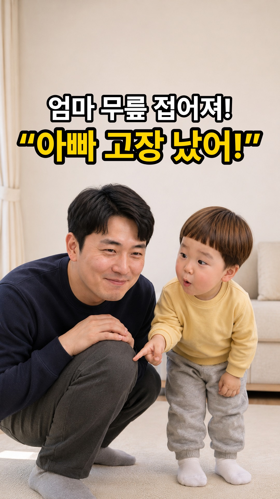
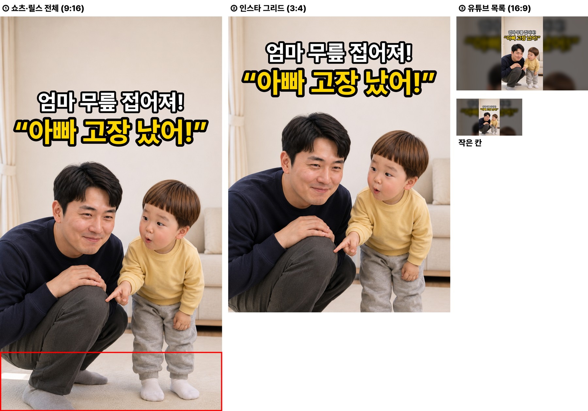
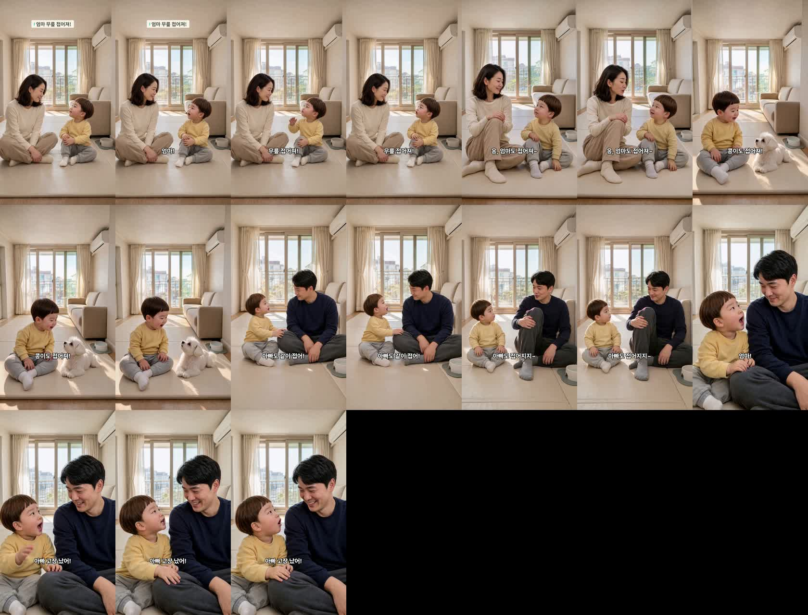
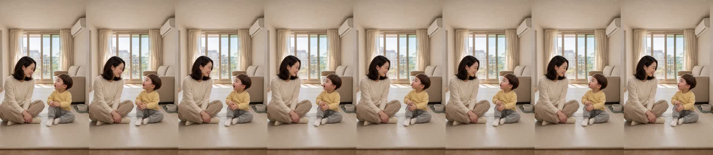
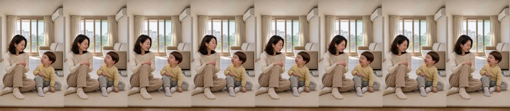
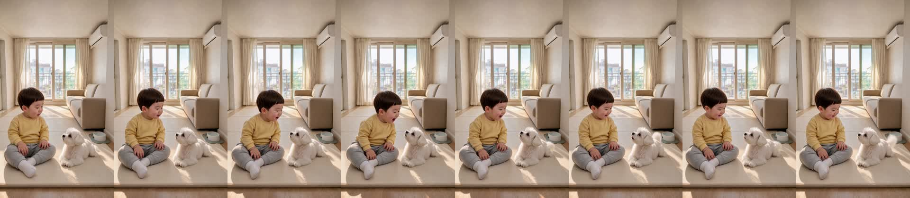
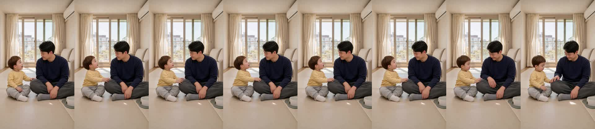
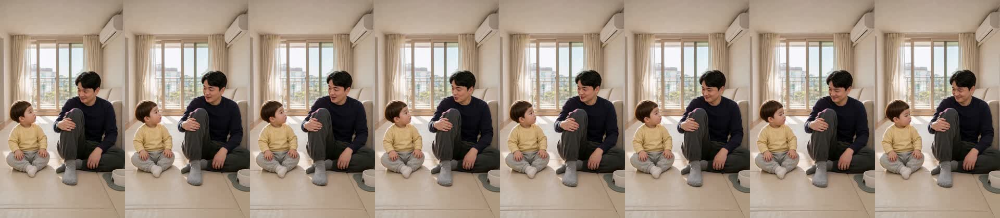
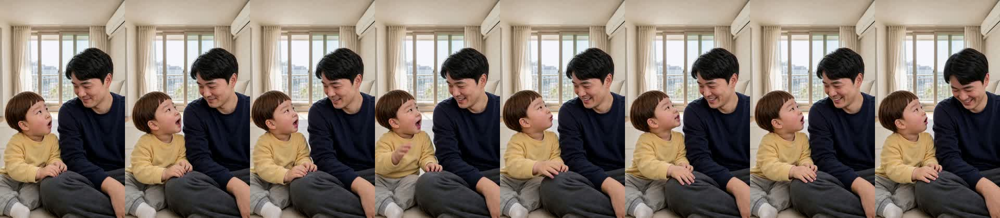

| C01 | 도윤 [후킹]: “엄마! 무릎 접어져!” 거실 매트 위에서 자기 무릎을 접었다 펴며 신기하게 올려다보는 도윤과 다정하게 바라보는 엄마 |
|---|---|
| C02 | 엄마: “응, 엄마도 접어져~” 과장된 비명 없이 도윤이와 눈을 맞추며 다정하고 자연스러운 미소로 무릎을 살짝 접어 보여 주는 엄마 |
| C03 | 도윤: “콩이도 접어져!” 매트 위에 앞발을 접고 엎드린 강아지 콩이를 보며 신나게 외치는 도윤 |
| C04 | 도윤: “아빠도 같이 접어!” 소파 앞 매트에 앉은 아빠 무릎을 가리키며 같이 접어 보자고 부르는 도윤 |
| C05 | 아빠: “아빠도 접어지지~” 아빠가 한쪽 무릎을 접어 세우는 순간 무릎에서 작은 ‘뚝’ 소리가 나고 멋쩍게 웃는 아빠 |
| C06 | 도윤 [펀치라인]: “엄마! 아빠 고장 났어!” 아빠 무릎에서 난 소리에 진짜 고장 난 줄 알고 진지하게 외치는 도윤과 웃음을 참는 아빠 |






